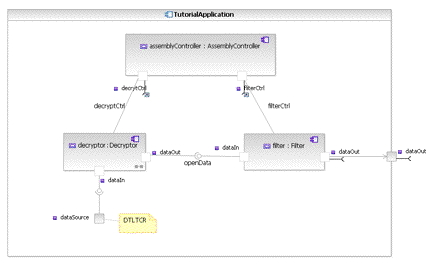
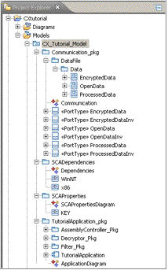

Tutorial 2: Developing the Model
This tutorial builds on the elements you created and lessons learned in Tutorial 1: Learning the Basics.
In this tutorial you will complete some more advanced procedures that will teach you about:
- validation
- property types
- definitions, implementations, and instances
- freestanding ports
Open the project and model
In Tutorial 1: Learning the Basics you created the base elements of your model. You created:
- IDL
- port types
- ports
- components and their associated elements
- an application
- connectors
- defined SCA and UML properties
In the Project Explorer expand the CXTutorial project and CX Tutorial model you created in Tutorial 1: Learning the Basics.
Run CX Validation
The validation process ensures that all SCA requirements are being met in your model, elements, or application.
To validate the TutorialApplication, do the following:
- In the Project Explorer, select TutorialApplication. Right-click and from the pop-up menu, select SCA Validation.
The validation process will run and any errors, warnings, or informational messages are displayed in the Problems View.
Four errors are returned by the validation process.
The following errors are returned (and will be fixed later):
- TutorialApplication property controller is required but has no value.
- This error is related to not having defined an assembly controller.
- DecryptorImpl requires at least one os, processor, property dependency or resource dependency.
- This error indicates that further modeling is required on the DecryptorImpl element.
- FilterImplImpl requires at least one os, processor, property dependency or resource dependency.
- This error indicates that further modeling is required on the FilterImpl element.
In addition to the these four errors, produced by the model validation process, the following error can also be seen. This error can be ignored. CX is looking for a makefile to build source. Because we have not generated source and its makefiles this error appears.
- no rule to make target 'all'
Create an assembly controller
One of the errors returned by validation indicated that an assembly controller is missing. The SCA requires that an assembly controller be identified.
Any component instance in your model can be the assembly controller. To resolve this error, you will create a new component and then designate it
as the assembly controller.
- In the Project Explorer, select the TutorialApplication package that you created in Tutorial 1.
- Right-click on the element and select Add CX > Component.
- In the Component Wizard, name the component AssemblyController and in the Type
drop-down list, select Resource.
- Click Finish.
- Open the AssemblyController diagram and add two uses ports to the component interface.
The ports should be of type <<PortType>> ResourceInv and be named decryptCtrl and
filterCtrl. In the Properties View SCA Tab set the kind to Control on both ports.
- In the Project Explorer, open the ApplicationDiagram diagram.
- In the Project Explorer, select AssemblyController structural realization
and drag it onto TutorialApplication.
- In the Palette, select the Connector and connect the AssemblyController ports
to the decryptor and filter. Note these connections should be made directly to the components, not their ports. Leave the connection names empty.
- With the TutorialApplication selected, click the SCA tab in the Properties View.
- In the controller field, click the edit button.
- Choose the assemblyController part which is part of TutorialApplication, and click OK.
This identifies the component as the assembly controller for the application.
Run validation
To ensure that the error regarding the assembly controller, discovered in the earlier validation process, are fixed, validate the
TutorialApplication again. You should now see the following errors (which will be fixed later):
- AssemblyControllerImpl requires at least one os, processor, property dependency or resource dependency.
- DecryptorImpl requires at least one os, processor, property dependency or resource dependency.
- FilterImplImpl requires at least one os, processor, property dependency or resource dependency.
- no rule to make target 'all'
Property type creation
Property types are essentially elements that can be re-used multiple times. Property types are used to define the elements in your model.
There are a number of property types:
- Enumeration Property Type
- Primitive Property Type
- Struct Property Type
- Struct Sequence Property Type
- Test Property Type
In the SCA, a property has a name and this property has the potential to be re-used across multiple devices and/or components.
For example, MAX_THROUGHPUT or DECRYPT_KEY can be created and make the re-use of properties simpler and more convenient.
- In the Project Explorer, right-click your CXTutorial_Model model and select Add CX > Package.
- Name the package SCAProperties.
- Right-click SCAProperties and select Add Diagram > CX Component Diagram.
- Name the diagram SCAPropertiesDiagram.
- In the Palette, expand the SCA Application drawer.
- In the Property Types drop-down list, select Primitive Property Type.
- Drop this element onto the CX Component Diagram.
- Name the property Key.
- In the Properties View > SCA tab.
- Set the following attributes:
- Action: External
- Kind: Configure And Exec
- Type: String
- Save the model.
This property is now available to be applied to model elements.
User-defined SCA property creation
Each component interface, component, instance or implementation can have several properties. Properties are used to provide
extra information about the element they are associated with.
- In the Project Explorer, open the Decryptor diagram. This is the diagram you created earlier with Component Wizard.
- In the CX Component Diagram, select the Decryptor.
- Right-click on Decryptor and from the pop-up menu, select Add CX > SCA Property.
- Name the attribute DECRYPT_KEY.
- Select the DECRYPT_KEY attribute and in the Properties View > SCA
tab.
- Click the Select Type button and choose the Key primitive property you created earlier.
- Set the Value to abc123.
Components and Devices: Definitions, Implementations, and Instances
A component or device's definition is its external interfaces and ports. A component or device's monolithic implementation is an
implementation of the component's definition. This is usually associated with source code or an executable. Instances of either a
component or device definition are added to an application or node. All definitions used must have at least one implementation.
Each definition needs one or more implementations.
Define monolithic implementation dependencies
The operating system and processor dependencies define which operating environment the component implementation needs to run or be loaded in.
- In CXTutorial_Model, create a package named SCADependencies, add a
CX Component Diagram and name it Dependencies. Open this diagram.
- In the Palette, expand the SCA Application drawer.
- Select Operating System and drop this onto the Dependencies diagram.
Name this element Linux.
- In the Properties View > SCA tab and set the Version to 2.6. The Version should match the os_version
allocation property set on the device to which this component will be deployed.
- In the Palette select Processor and drop this onto the diagram. Name the element x86.
For each Component in your model, do the following:
- Open the component's associated CX Component Diagram.
- Drag the Linux and x86 elements from the SCADependencies package onto the diagram.
- In the Palette, select OS Link and connect the implementation to Linux.
- In the Palette, select Processor Link and connect the implementation to x86.
Create a DeviceThatLoadedThisComponentRef (DTLTCR) Freestanding Port
A freestanding port (FSP) models how to find a port or a service during run-time. A supports interface, uses or
provides port can be designated as a freestanding port.
- In the Project Explorer, open the ApplicationDiagram diagram.
- In the Palette, expand the SCA Application drawer.
- Select FSP Device That Loaded and drop this element onto the application structure.
- Select Existing Element and search for the Port Type (EncryptedData) you created in Tutorial 1.
- Select <<PortType>> EncryptedDataInv and click OK.
- Name the port dataSource.
- Select the FSP and in the Properties View > SCA tab.
- Set the part property to decryptor in the TutorialApplication.
- Set the Findby Port Name property to dataSource. This is the name of the port to connect to on the platform.
- In the Palette, select the Connector and connect the decryptor's dataIn port
to the dataSource FSP.
- Right-click on the dataSource FSP and select Add Note.
Type: DTLTCR for Device That Loaded This Component Ref. Resize and move the note as necessary.
Validate the Tutorial Application
Select the TutorialApplication and validate again. The application should validate with no errors. Validating the application, also validates other components and elements that are used in the definition of the application.
Tutorial Summary
In this tutorial you built on the model and elements you defined in Tutorial 1: Learning the Basics.
You saw how the CX validation process works, learned how to find and fix errors in your application, learned about elements such as: assembly controllers, property types,
implementation artifacts, and freestanding ports.
The following images illustrate what your application and model should look like in Spectra CX:


In Tutorial 3: Platform Development, you will learn about:
- device
- allocation properties
- nodes
- device and domain manager